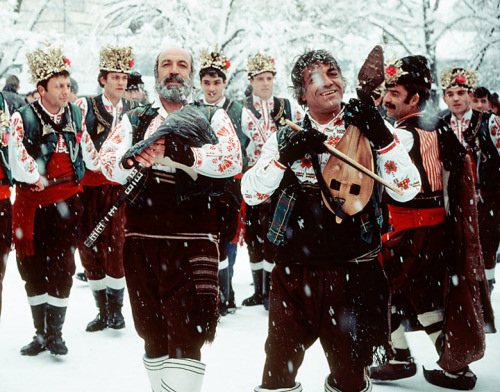

Коледа е един от празниците, които все по-често свързваме с материалното – купуване на подаръци, празнуване извън дома и други комерсиални и модерни неща. Малко на заден план остават основите на празника и зачитането на традициите, които са вплетени в него. Подобно на много други обичаи и вярвания в страната и тук присъстват в немалка степен ритуали и обреди, наследени от езическата епоха. Какви традиции има в страната, към които е добре да се придържаме, за да можем да запазим духовната част на празника? Не, Дядо Коледа и новият телевизор, не са от типичните български традиции. Но пък не са лошо допълнение към празника.
Традиционно трапезата на Бъдни вечер се състои от постни ястия с нечетен брой. Поставят се традиционни за страната храни и ястия – това е обичай, който е останал от векове. Все пак преди столетия не са имали супермаркети, а храната за Бъдни вечер и Коледа е била това, което семейството си произведе само – ошав от сушени плодове, зърнени храни – боб, варено жито, питка. Всичко, което днес се поставя на трапезата, е било онова, което хората са имали на разположение от собствените си градини. Най-възрастният мъж в семейството произнася молитва и отчупва и дава по парче от обредната питка на всички членове на фамилията, които присъстват на масата, като започва от най-старите. На някои места на трапезата трябва да присъства и вино, но задължително червено. Както и в други религиозни обичаи, то символизира кръвта на Исус Христос и затова се поставя на трапезата.
Бъдникът е специално дърво, което се поставя в огнището в нощта срещу Коледа.
Обикновено е дебело и голямо парче, често от дъб или круша. Според това как гори в огнището,
се гадае каква ще бъде годината – ако огънят е буен и пръска много искри, идната година ще бъде плодородна и богата.
Задължително е дървото, избрано за бъдник, да бъде голямо и дебело.
То ще поддържа огъня в къщата през цялата нощ. Обичайно трапезата е грижа на жените, но мъжете също имат определени
роли при подготовката за празника. Така например избирането и подготовката на бъдника е именно задача на стопанина.
Той трябва да го донесе на рамо, за да не докосва земята, да го подготви и след това да го запали. На сутринта огънят трябва да
се загаси с вино. Ако има неизгорели части, те могат да се използват за направа на кръстчета или да се вградят в ралото – това е
символ на плодородието и селския труд. Пепелта също се разпръсква из нивите за плодородие, а може да се използва и за лечебни цели.
С извинение към всички, които не са почитатели на свинското месо. Старата българска традиция казва, че в деня на 25-ти декември –
точно на Коледа – се коли специално угояваното за празника прасе. А след това – то логично се хапва. Тъй като в днешно време прасетата са
по-скоро „запазени“ за селата, отколкото за градовете, може да спазите традицията и да си сготвите свинско за коледния обяд, купено от магазина.
Редът на прасенцето не е случаен. Преди коледния ден се спазва строг пост в продължение на 40 дни, в които месо не се яде.
Така че ако се пренесете във време, в което основната храна е била хлябът, то свинското си е било истинска мечта след повече от месец постене.
Традицията задължително включва и посещение на коледари. Коледуването се извършва през нощта между Бъдни вечер и сутринта на Коледа.
Според вярванията тогава излизат редица свръхестествени същества като караконджули, вампири, таласъми. Останало от древните езически традиции е вярването,
че коледарите имат силата да изгонят всички зли духове и именно затова те преминават през тъмната част на денонощието от къща на къща.
Песните им наричат за здраве и берекет, а стопаните ги посрещат и ги даряват. Има различни песни, които се изпълняват при коледуване, но всички те
са посветени на наричането за здраве и берекет през новата година. Във времето, когато страната е била все още силно аграрно развита, Коледа се е
падала в средата на зимата и тепърва е предстояло да започне новата земеделска година.

Обичайно е домакините да даряват коледарите с т.нар. „колаче“. Това е вид тестено изделие, което се прави от брашно, като се оформя в кръг с дупка по средата.
Често се поставя върху коледарката – специална тояга, която коледарите носят, когато обикалят по къщите. Традиционното облекло на коледарите включва
дебели и топли ямурлуци – специални дрехи, произвеждани ръчно от вълна и козина по отдавна забравена технология. Целта им е да пазят от студ и дъжд,
като в миналото са били традиционни дрехи за пастири и овчари. Днес са останали само като символ на традицията при различни обреди.